Real people, priority work and finished home fixtures. Full frames are shown together; click a photo for its upload-ready JPEG. Nothing has been uploaded.
Selection record · Service shortlists
01 is the proposed cover. These numbers organize the review package; Google controls the public display order.
Visual selection rules
Palette: Natural copper, neutral walls, white fixtures and real equipment colors. Outdoor greens and soil remain unchanged.
Light: Readable equipment and faces; prefer sharp, evenly lit frames. Genuine utility-room light is acceptable when the subject remains clear.
Tone: Candid, documentary work and recognizable home fixtures. People focus on the task instead of posing or smiling at the camera.
Sequence: Start with focused tool use and the owner's priority work. Mix equipment, people and finished fixtures. Avoid near-identical views of the same equipment.
Treatment: Copy reviewed JPEG bytes without cropping, retouching, filters, color grading or AI changes. Show full frames in the review gallery.
Limits: Proposed numbers organize this package, not Google's public photo order. Google may choose another first or cover image. Photo count and filenames do not establish a ranking or website-traffic guarantee.
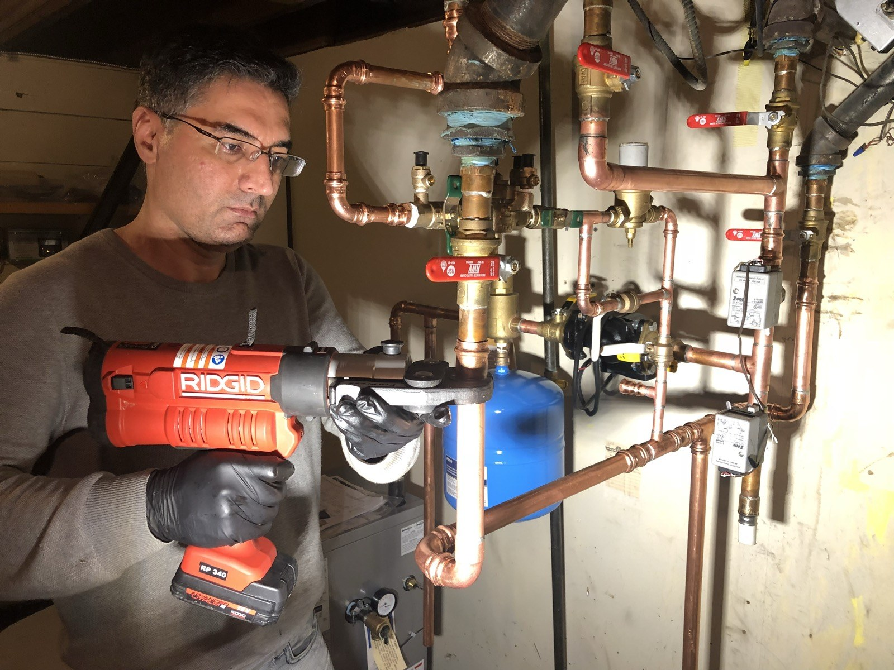
01. Technician using a press tool on copper heating pipework
Proposed cover and human introduction · ID 105
Focused tool use and recognizable copper pipework introduce real work without a posed portrait.
Keep the face, hands, press tool and copper joint visible in Google's preview. Do not label the person by name without an identity record.
Open JPEG · Related website service

02. Natural-gas tankless water heater and connections
Priority service: water heaters · ID 132
A recognizable, sharp tankless heater shows a specific service customers can seek on the website.
Keep the vent and lower connections. Retain the equipment label; do not erase it.
Open JPEG · Related website service

03. Electric storage water heater with expansion tank
Priority service: water heaters · ID 095
The familiar tank complements the tankless photo and covers a different heater type without repeating one installation.
Use the full portrait frame. A shallow landscape crop loses the expansion tank or lower heater.
Open JPEG · Related website service
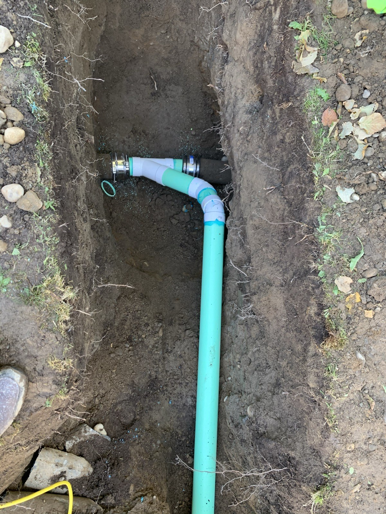
04. Replacement sewer branch connected in an open trench
Priority service: sewer and underground pipe work · ID 056
The distinct pipe and replacement connection make underground sewer work understandable at a glance.
Keep the branch and existing pipe connection. This is open-trench work, not evidence of trenchless repair.
Open JPEG · Related website service
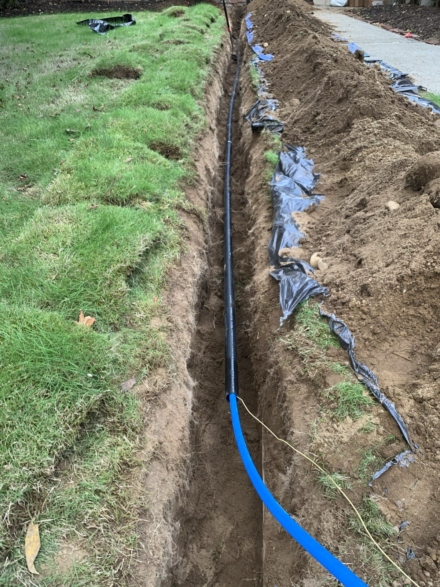
05. Pressure-pipe route in an open yard trench
Priority service: underground water pipes · ID 044
The long pipe route explains the scale of yard excavation and complements the sewer connection detail.
Keep the foreground blue pipe and the receding route. Do not call this trenchless work.
Open JPEG · Related website service
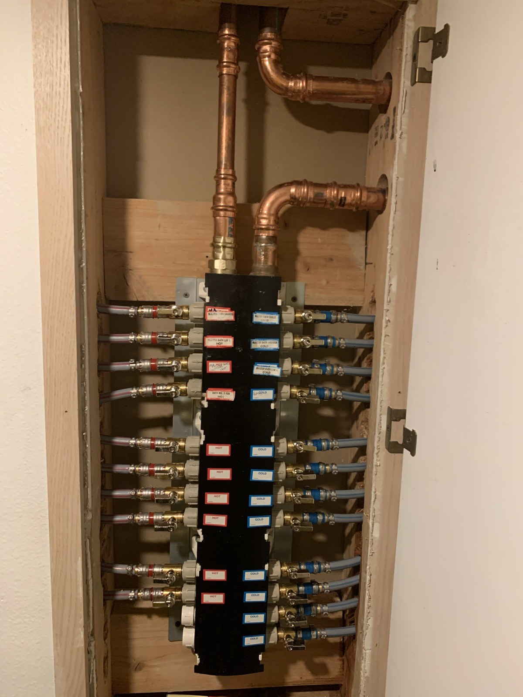
06. Labeled hot and cold domestic-water distribution manifold
Priority service: plumbing and repiping · ID 061
Orderly routing and readable shutoffs show plumbing detail without relying on an unverified repair story.
Keep upper copper feeds and the full manifold. This is domestic-water distribution, not a heating manifold.
Open JPEG · Related website service
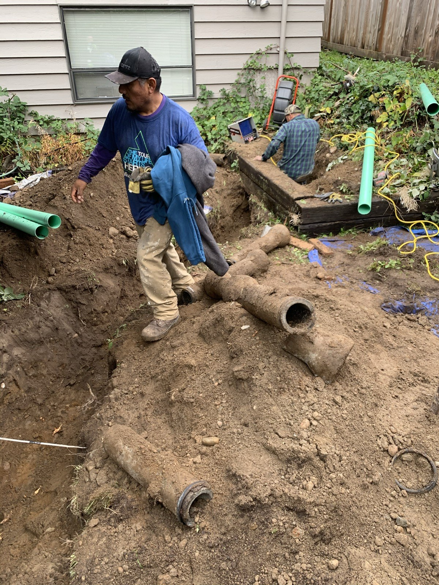
07. Crew beside removed clay sewer pipe and replacement sections
People at work: sewer service · ID 055
People and removed pipe show the work behind the cleaner connection photo and add residential yard context.
Keep the workers and removed clay pipe. Do not assign worker names or invent a before-and-after pairing.
Open JPEG · Related website service
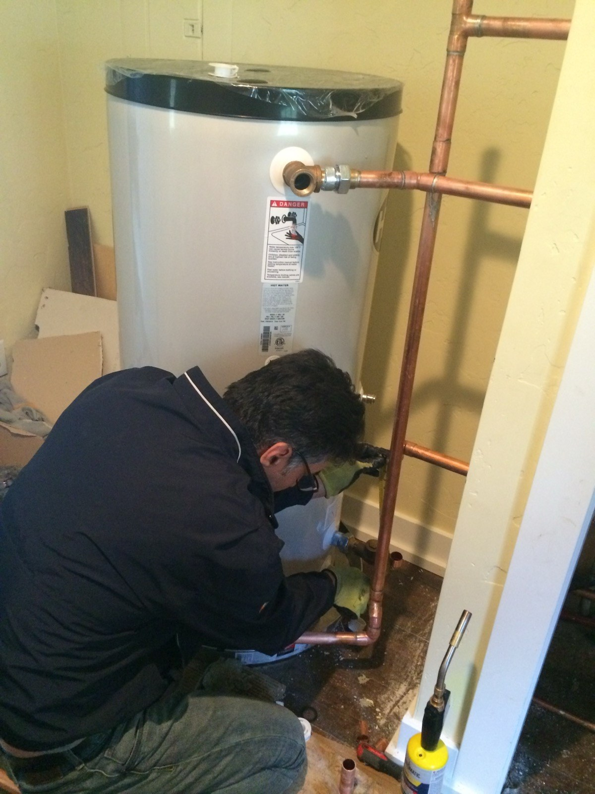
08. Worker connecting copper pipe beside a hot-water tank
People at work: hot-water equipment · ID 176
A visible tank and active connection work add a human service view to the two heater photographs.
Keep the hands, tank and copper connection. The worker partly obscures the connections; use this as work in progress, not a finished-installation hero. The heat source is not established; do not label this gas, electric or heat-pump.
Open JPEG · Related website service

09. Pedestal sink and three-piece faucet
Finished home fixture · ID 186
A clean, familiar fixture connects technical work to the result a homeowner recognizes.
Keep the faucet and basin. Do not claim the image documents a leak repair.
Open JPEG · Related website service
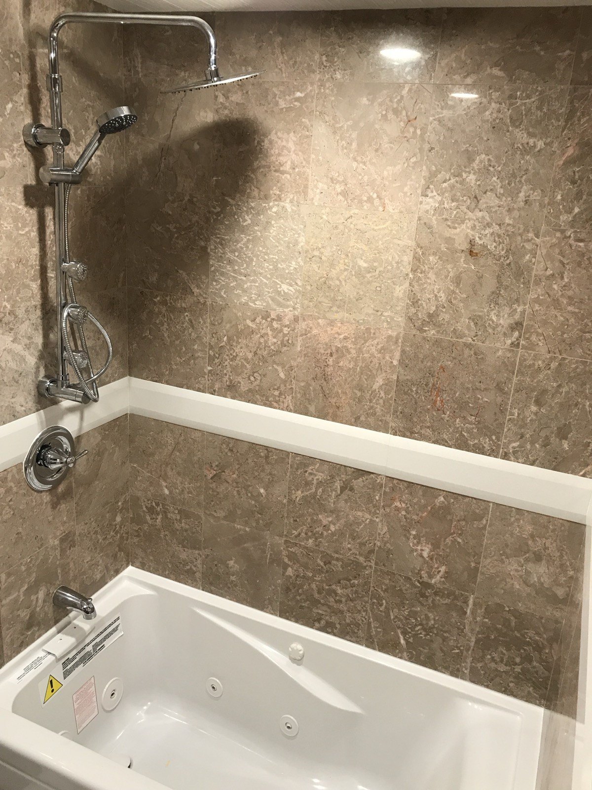
10. Bathtub with overhead and handheld shower fittings
Finished home fixture · ID 188
The clear shower fittings show a different plumbing service from the sink, with the same calm residential finish.
The shower fittings sit on the left and the tub below. Preserve both in the full portrait frame; a centered square crop can leave too much bare tile and lose the showerhead. This is not paired with a construction photo as verified before-and-after.
Open JPEG · Related website service
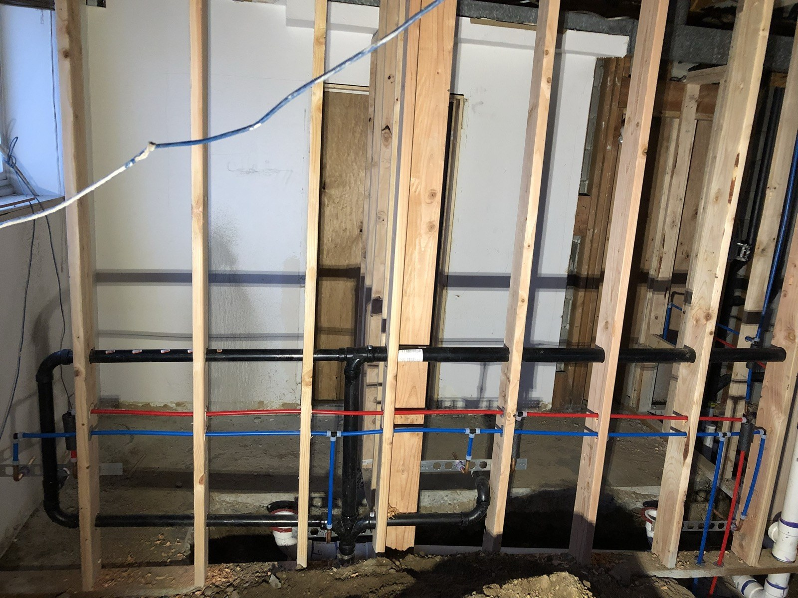
11. Water-supply and waste lines in an open wall
Plumbing detail: supply and drainage · ID 127
The wider wall view shows supply and drainage routing that a finished bathroom hides.
Keep red and blue supply runs and black waste branches. This is rough-in work, not drain cleaning or leak detection.
Open JPEG · Related website service
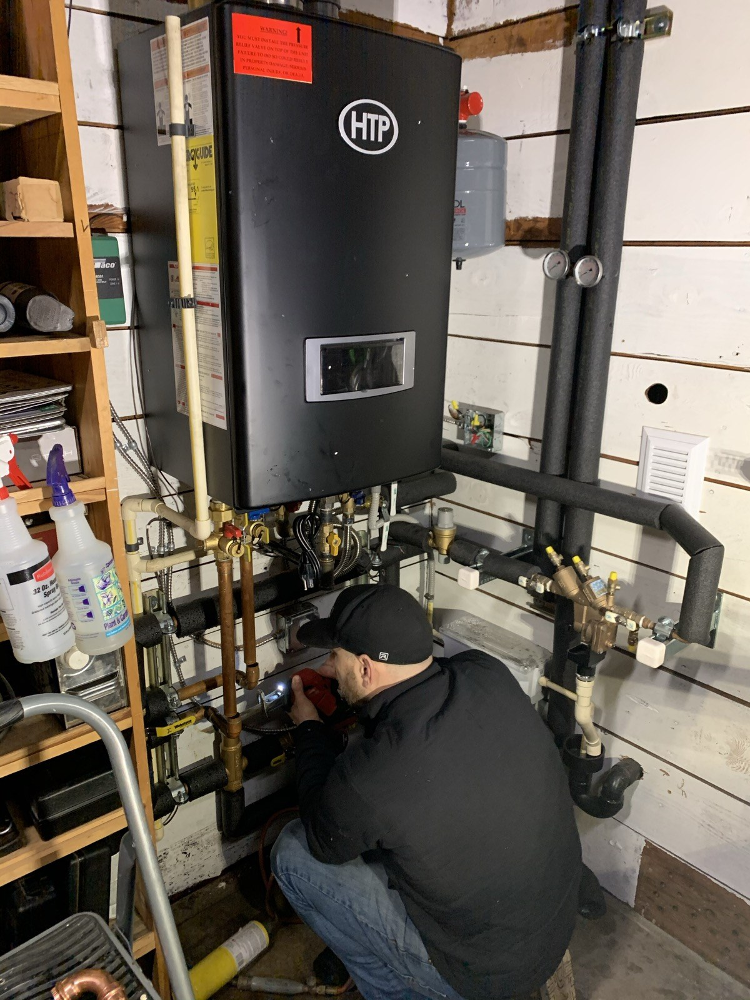
12. Technician working on pipework beneath a wall-mounted heating appliance
People at work: hydronic heating · ID 080
The visible tool use and heating equipment show hands-on work within the hydronic specialty. This replaces an equipment-only circulation photograph.
Use the full portrait frame to keep the technician, tool, appliance and connected pipework visible. Shelves at left are part of the real setting. The photograph does not establish a specific repair, annual service or appliance subtype.
Open JPEG · Related website service
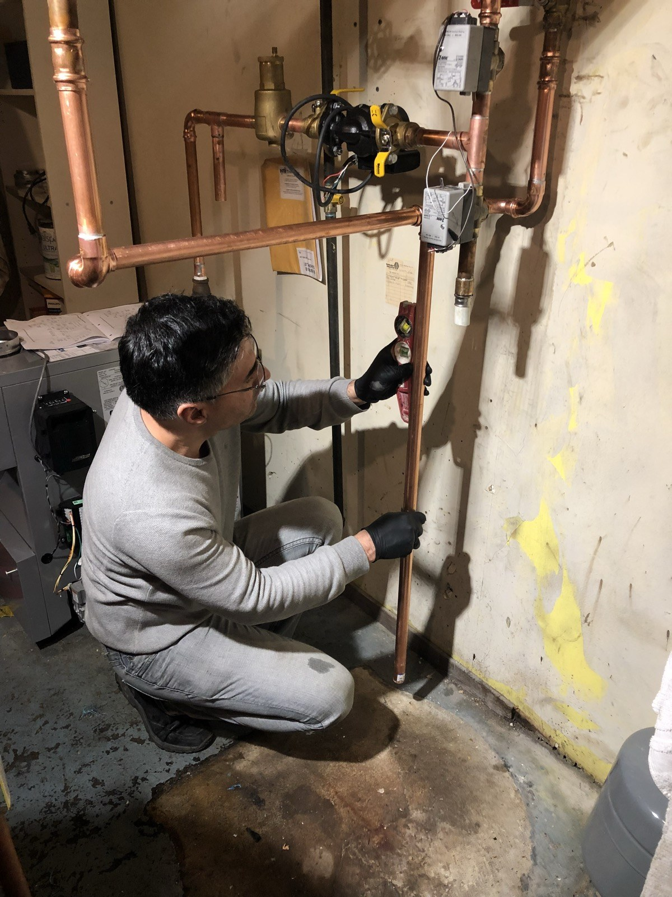
13. Technician checking copper heating-pipe alignment with a level
People at work: checking pipe alignment · ID 099
The level, hands and copper pipe make the task clear. This adds a distinct work process while the sink and shower photos retain finished-home context.
Keep the level, both hands and copper pipe together in the full portrait frame. Preserve the work light and wall condition. This shows an alignment check, not proof of a completed repair or replacement.
Open JPEG · Related website service
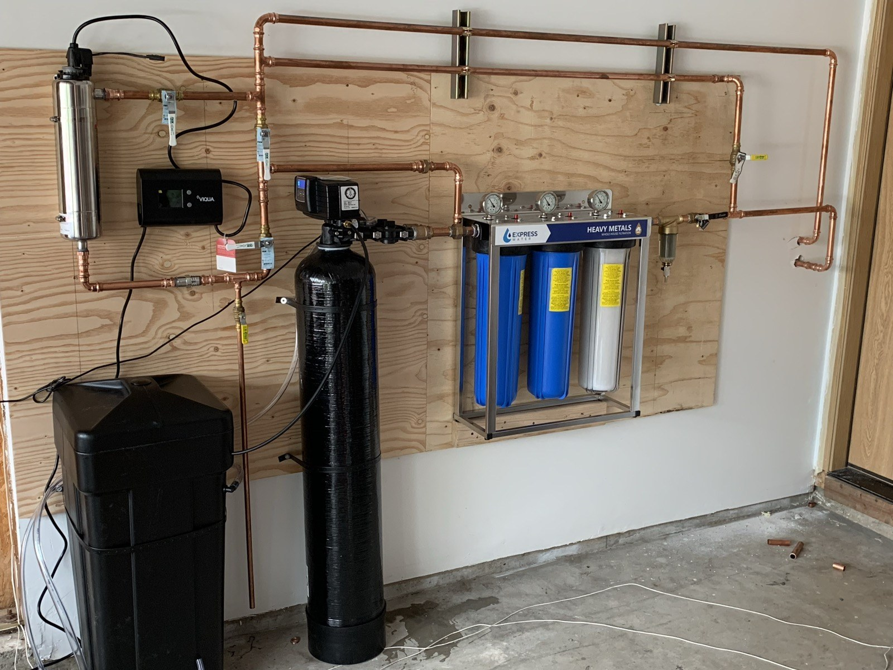
14. Water softener, UV chamber and cartridge filtration bank
Filtration specialty: equipment overview · ID 028
A readable treatment layout shows the breadth of his water work and invites customers to understand the options on the site.
Keep the softener, separate brine tank, UV chamber and filter bank. Do not infer cartridge media from housing color.
Open JPEG · Related website service
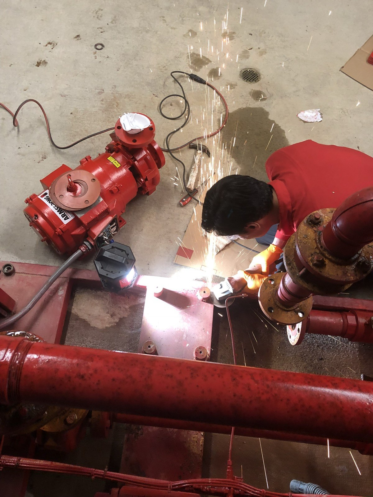
15. Worker grinding steel beside a pump assembly
People at work: metal fitting · ID 020
The close view of the worker, sparks and pump assembly shows active field work with a stronger focal point than the wider frame.
Keep the worker, hands, grinder, sparks and pump assembly in the full portrait frame. The pump's served system is unverified; do not label it fire protection, domestic water, sump-pump or hydronic equipment. This shows grinding or cutting, not welding.
Open JPEG · Related website service